A working analytics platform for the marketing team of a large city running event, covering a 172-day registration campaign across four paid channels and four earned ones.
An event marketing team has one budget and four weekly questions. Every part of this application maps onto one of them:
| The question | Where it is answered |
|---|---|
| Where did the money go, and what came back? | Overall, Marketing Mix, and the four channel views |
| Which channel should get the next rupee? | ML Lab — spend response curves and the budget optimiser |
| Are these numbers even correct? | Data Quality — reconciliation and fault detection |
| How does the season finish? | Forecast — projection to race day with intervals |
The event is the Velocity Run Series 2026: eight ticket types from a 2 km children's run to a full marathon, sold across six Indian cities, with race day on 23 August 2026. Media runs on Meta, Google, LinkedIn and newspaper print, alongside organic search, email, referral and affiliate traffic.
| Views | 13 | Fact rows | 76,453 |
|---|---|---|---|
| Trained models | 6 | Session records | 79,996 |
| TypeScript files | 49 | Reporting levels | 22 |
| API endpoints | 8 | Campaign season | 172 days |
git clone https://github.com/shashanx52/runpulse-analytics cd runpulse-analytics npm install # install dependencies npm run gen:data # build the dataset ~15 seconds pip install -r ml/requirements.txt # numpy, pandas, sklearn npm run train # fit the six models ~60 seconds npm run dev # http://localhost:3100
npm run gen:data. The training step is needed
by two views — Forecast and ML Lab — and everything else works without Python installed
at all.
The AI Analyst needs a Google Gemini API key. Create .env.local in the project root:
GEMINI_API_KEY=your_key_here
Without a key that one view shows a clear message and the other twelve are unaffected. The key is read server-side only and is never sent to the browser.
| Command | What it does |
|---|---|
npm run dev | Development server with hot reload, port 3100 |
npm run build | Production build |
npm run start | Serve the production build |
npm run typecheck | TypeScript check, no emit |
npm run gen:data | Run the data simulation, writes data/*.csv |
npm run train | Fit the models, writes ml/models/bundle.json |
Every technology in the project, the exact job it does, and why it was chosen over the obvious alternative.
| Technology | Used for | Why this one |
|---|---|---|
| Next.js 14 App Router |
Page shell, the eight API route handlers, production build | One framework serves both the UI and the server endpoints, so the typed row shapes are shared between them instead of being redeclared on each side. |
| TypeScript strict mode |
All 49 source files | Every table column and chart series is keyed by a field name. Strict typing turns a renamed field into a build error instead of a blank column nobody notices. |
| React 18 | The 13 views and 10 shared components | Views share one context object and recompute with useMemo, so switching a filter re-derives in memory with no server round trip. |
| Recharts | Every chart: bars, lines, stacked areas, prediction bands | Composes into React and reads colours from the live theme, so all three themes work without a second chart config. |
| Papaparse | Reading the CSV files server-side | Handles quoted fields and embedded commas correctly. A hand-written split on commas breaks the first time a campaign name contains one. |
| Python 3.10 numpy, pandas |
Data preparation inside the training script | The vector operations the model fitting needs are native here. |
| scikit-learn | All six models: logistic regression, gradient boosting, Ridge | Standard, inspectable implementations. Coefficients can be exported and re-scored elsewhere, which is what the next row depends on. |
| Google Gemini 2.5 Flash |
The AI Analyst view | Receives aggregated totals only — never raw rows — and is instructed to answer from them or say it cannot. |
| CSS custom properties | Three themes from a single stylesheet | Theme values are written to the document root, so one stylesheet covers all three instead of three sets of classes. |
| Vercel | Hosting and deployment | Builds directly from the repository. API routes become serverless functions. |
sklearn.predict_proba to
within 1e-9 on held-out rows before writing the file, so the two paths cannot drift.
scripts/generate.mjs simulate the campaign, then aggregate it
│
├──────────────► data/*.csv 6 files, 193,000 rows
│ │
│ ▼
│ lib/csv.ts typed loaders, parsed once per process
│ │
│ ▼
│ lib/data.ts ratios, slicing, movers, anomalies
│ │
│ ▼
│ app/api/* ──────────► 13 React views
│ ▲
▼ │
ml/train.py ──► ml/models/bundle.json ──► lib/ml.ts scored in the browser
The generator simulates the campaign once, then writes both the aggregated reporting levels and the session-level training sample from that same pass. The dashboard totals and the model training set therefore cannot disagree with each other.
All derivation lives in lib/data.ts. Ratios are computed from summed numerators and denominators, never averaged from per-day ratios — because the mean of daily conversion rates is not the conversion rate, and that mistake produces numbers that look plausible and are wrong.
Every date is YYYY-MM-DD from the moment it is loaded, so sorting text sorts chronologically. Loaders normalise any other format on the way in. In DD/MM/YYYY form, text sorting puts 9 August after 18 August, and every trend chart in the application would be silently wrong.
| Endpoint | Returns | Size |
|---|---|---|
/api/data | The full funnel table, packed | 2.61 MB |
/api/meta | Meta rows: campaign × ad set × creative × city | 1.14 MB |
/api/google | Google rows: campaign × city | 0.37 MB |
/api/linkedin | LinkedIn rows: campaign × audience × city | 0.12 MB |
/api/print | Print insertions | 0.01 MB |
/api/ml | All six trained models | 0.12 MB |
/api/quality | Six data-quality checks, run live | 0.01 MB |
/api/chat | AI Analyst answer POST | — |
The data is simulated. scripts/generate.mjs runs a seeded simulation of an advertising auction, a registration funnel and a ticket price ladder, then aggregates the outcome into 22 reporting levels and draws an 80,000-row session sample for model training. Seed 20260823, so rebuilding reproduces the identical dataset.
| File | Rows | One row is |
|---|---|---|
funnel_daily.csv | 76,453 | one day × one reporting level × one entity |
meta_ads_daily.csv | 23,892 | day × campaign × ad set × creative × city |
google_ads_daily.csv | 9,504 | day × campaign × city |
linkedin_ads_daily.csv | 3,480 | day × campaign × audience × city |
print_ads_daily.csv | 128 | one newspaper insertion |
sessions.csv | 79,996 | one website session, with its outcome |
channel spend L mix% landed regs GTV Cr CPC CAC ROAS Meta 124.0 45.4 9,92,760 18,678 3.43 12.5 664 2.77x Google 107.2 39.3 8,55,690 26,580 4.94 12.5 403 4.61x Print 22.2 8.1 32,006 268 0.05 69.3 8270 0.23x LinkedIn 19.7 7.2 25,250 352 0.07 77.8 5583 0.34x Organic - - 5,03,381 15,361 2.85 - - - Email - - 1,65,665 6,621 1.22 - - - Referral - - 1,14,991 2,824 0.53 - - - Affiliate - - 1,01,596 1,641 0.31 - - - landed 27,91,339 -> leads 3,24,087 -> pay 1,26,651 -> registrations 72,325 GTV Rs 13.40 Cr on Rs 2.73 Cr paid spend average order value Rs 1,853 funnel 11.6% -> 39.1% -> 57.1% landed to registration 2.59% blended ROAS 4.91x paid-only ROAS 3.11x
spend^0.8 rather than in a straight line. Without it, the true spend
elasticity is exactly 1.0 and the response curves in section 7 would have nothing to
measure. Pacing drift is a random walk on each channel's daily budget, independent
of demand; without it, spend is a fixed function of the demand index and perfectly
correlated with the trend controls, which makes the elasticity statistically
unidentifiable — the regression cannot separate the effect of spending more from the
effect of the calendar.
Each view, what it is for, and the one thing it is designed to make visible.
The blended picture: eight headline figures, the daily trend, the full funnel, and where spend went against where revenue came from.
Its point: blended ROAS (4.91×) counts organic, email and referral revenue against paid spend. Paid channels alone returned 3.11×. Both are shown, because quoting the blended figure as media performance flatters the buy by more than half.
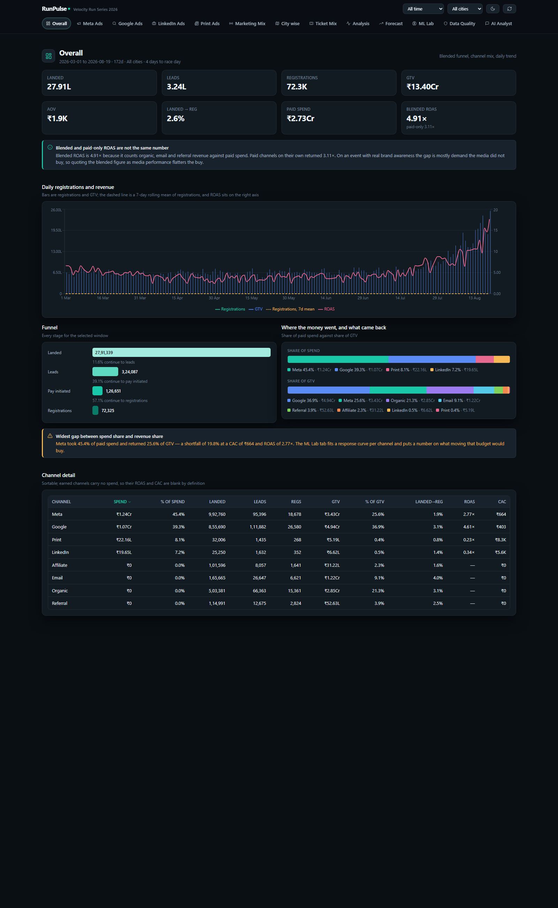
Drill-down through campaign, ad set, creative, creative type, objective and city, with click-through rate, cost per click, cost per thousand impressions, and cost per acquisition on every row.
Its point: the creative fatigue chart plots click-through rate against days on air rather than against the calendar, so assets launched months apart are directly comparable and a decaying creative is obvious.
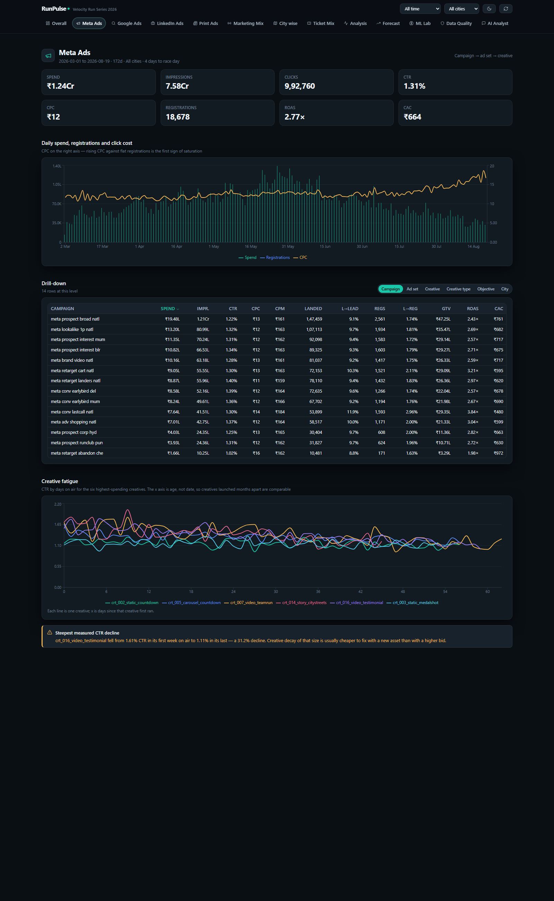
Performance by campaign type — brand search, generic search, Performance Max, display, YouTube, discovery.
Its point: brand search converts people who were already searching for the event by name, so its return is enormous and it lifts the whole channel average with it. The view reports Google's ROAS both with and without brand search, because only the second number should influence a decision to spend more.
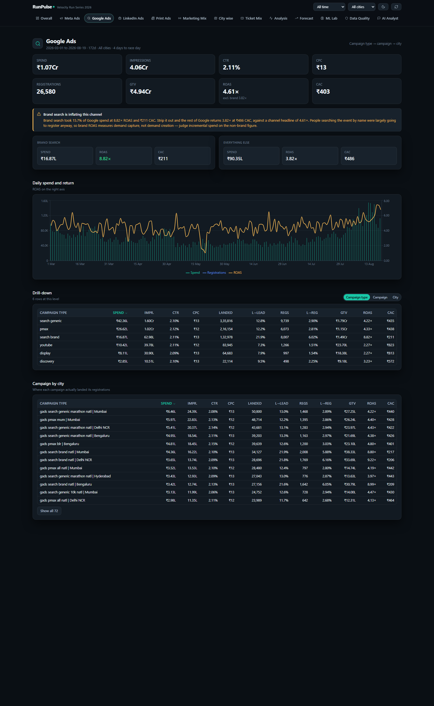
A business-to-business buy aimed at corporate team registrations, across five audience segments.
Its point: LinkedIn ran as two short bursts rather than continuously, and the view detects those flights from the data itself rather than having the dates written in. At ₹77.8 per click against roughly ₹12.5 on the other channels, it is the most expensive traffic in the account, and the view says so.
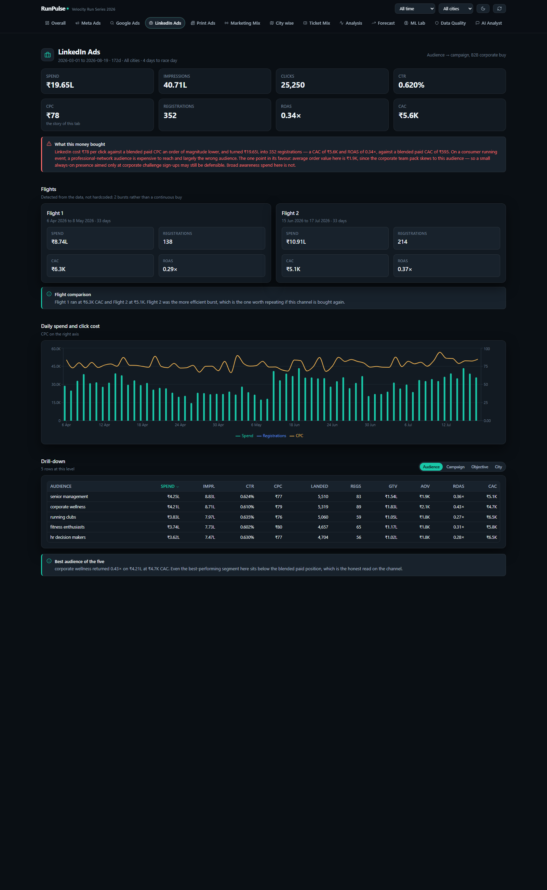
Newspaper insertions by publication, slot size and city.
Its point: a newspaper advertisement has no click. The only tracked path from print to a registration is a QR code, which catches a tiny fraction of the people who saw it — everyone who read the ad and later searched the event by name is recorded as Google or Organic. So the view treats the tracked return as a floor, not a measurement, and judges the channel on cost per thousand reach instead.
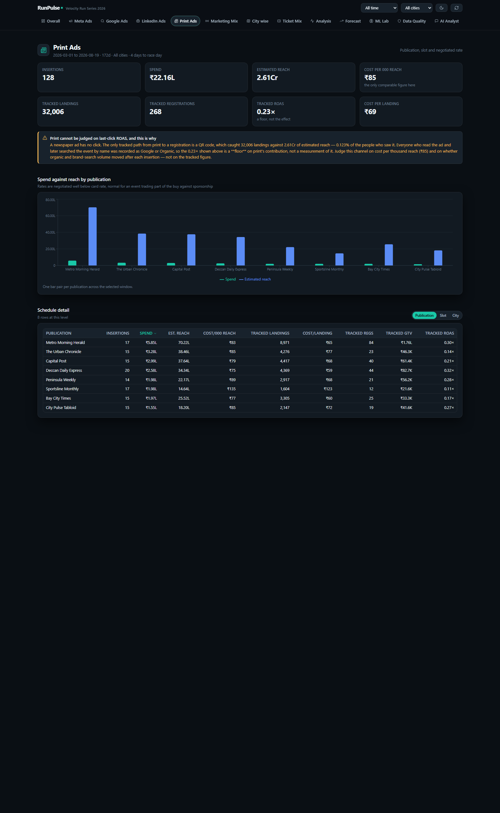
All eight channels side by side on a metric the reader chooses, with a full comparison table.
Its point: the table is sorted by the gap between a channel's share of revenue and its share of spend. A channel taking 8% of the budget and returning 0.4% of revenue is visible immediately.
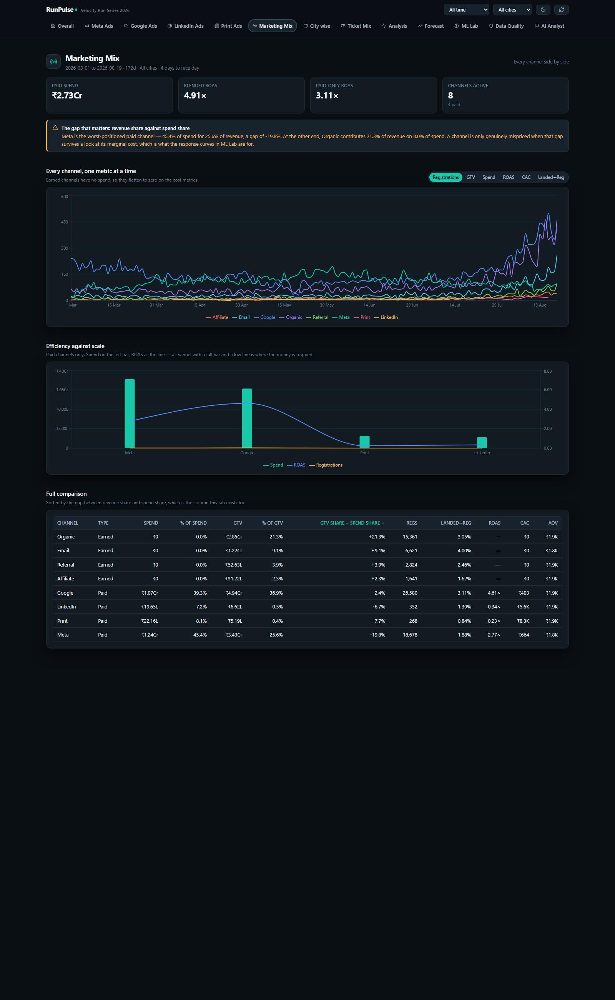
Six cities, with every funnel step reported separately rather than collapsed into one conversion rate.
Its point: a city can look acceptable on overall conversion while failing badly at one specific step. Separating the steps localises the problem — a lead-stage gap is a form or offer issue, a payment-stage gap is usually price or checkout friction.
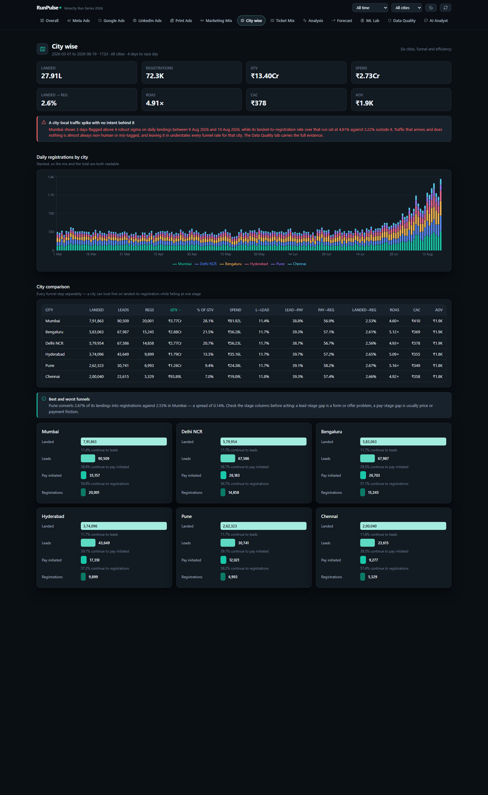
The eight ticket types, from ₹499 to ₹6,499, by volume and by revenue.
Its point: the cheapest ticket dominates the registration count while the expensive ones dominate revenue per head, so a registrations target and a revenue target can move in opposite directions. The view also shows how the mix shifts as race day approaches.
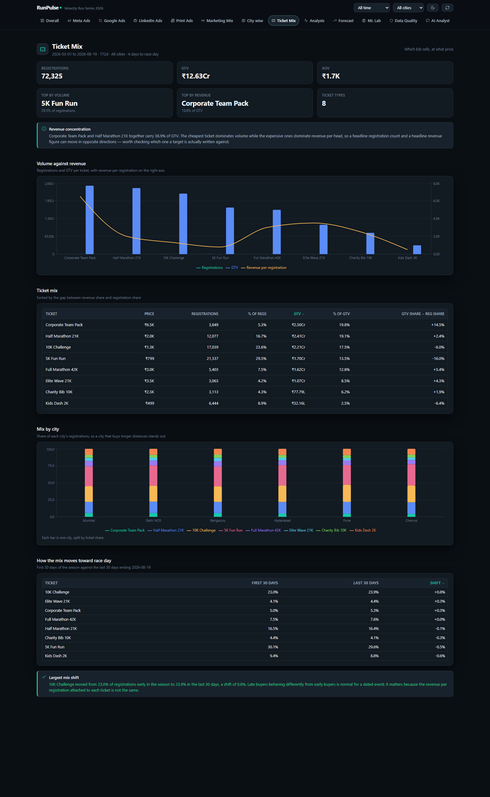
The diagnostic view: biggest movers, funnel diagnostics, an anomaly scan, and an efficiency quadrant.
Its point: movers are ranked by absolute change, not percentage. A 400% jump on two registrations is noise, and ranking by percentage puts that at the top of the list every single week.
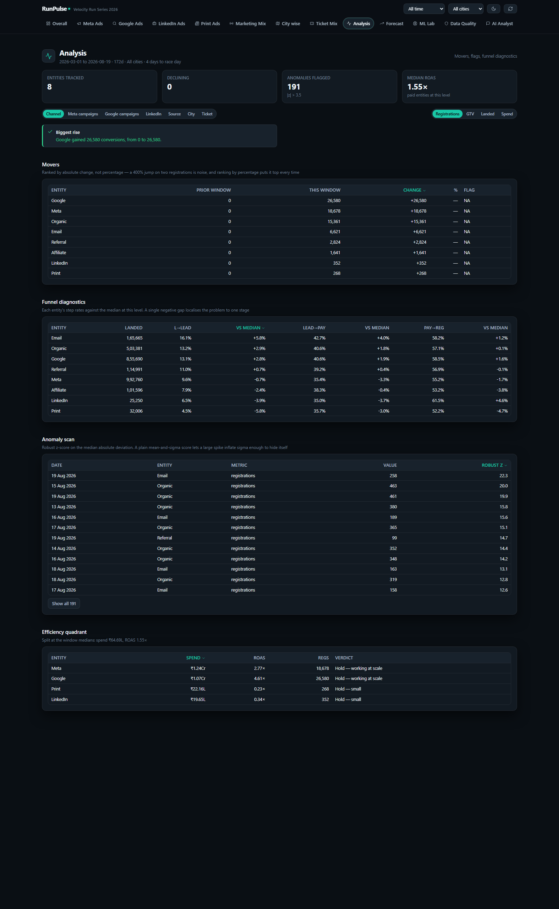
A projection of registrations, revenue, traffic and spend through to race day, with prediction intervals.
Its point: the error of a naive baseline is printed directly beside the model's own error. A forecast that cannot beat "assume next week looks like last week" is not worth acting on, and the reader should be able to see that without taking it on trust.
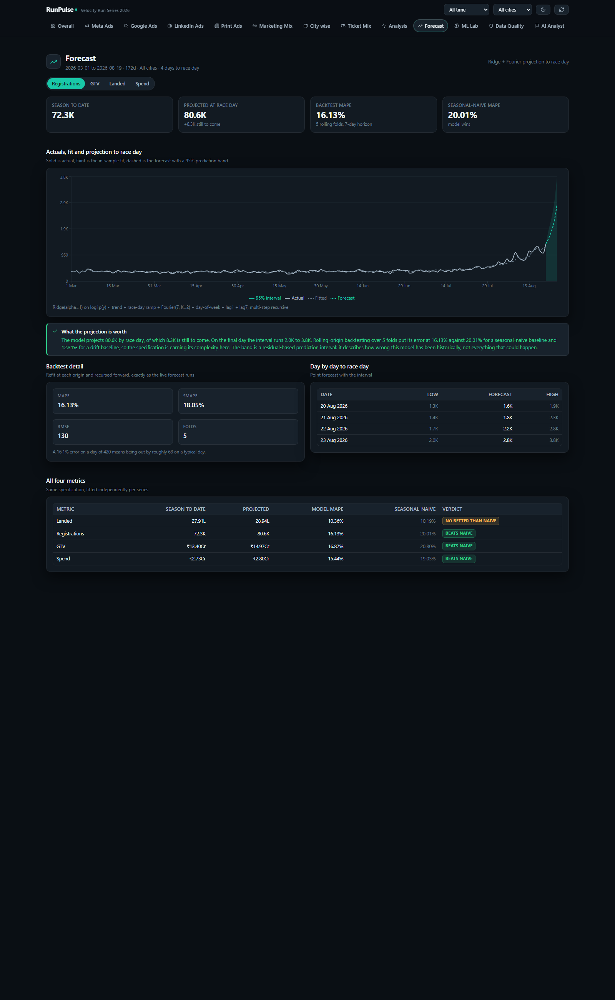
The modelling work presented for inspection: held-out metrics, a confusion matrix, a calibration curve, the largest effects as odds ratios, a live scorer, the response curves, and the budget optimiser.
Its point: the scorer is interactive. Change the channel, city, device or session depth and the predicted probability updates immediately, computed from the exported coefficients rather than from a stored lookup.
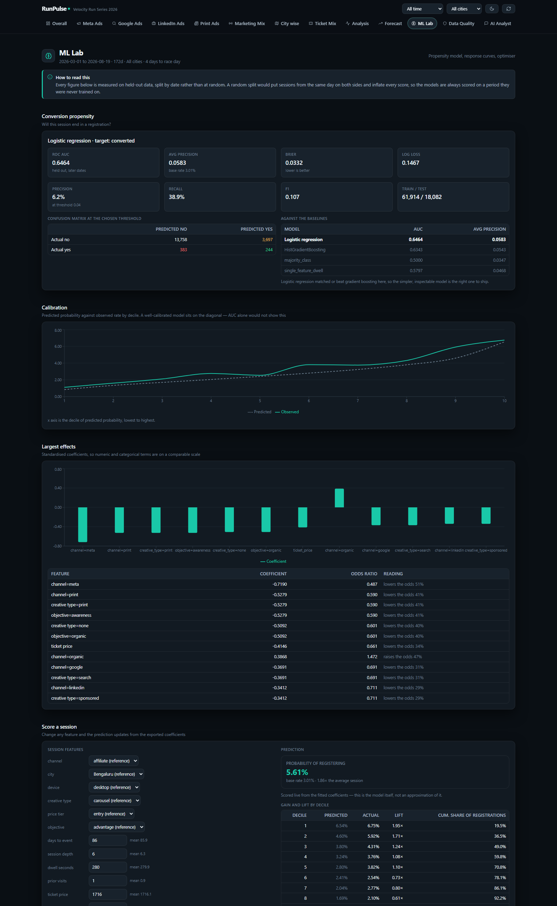
Six checks run live on every load, plus the reconciliation figures and the two known tracking faults.
Its point: every check prints what it expected next to what it measured, so a green tick can be judged instead of trusted. And the system is required to keep catching two faults that are already known — a monitor that cannot prove a catch on a fault you know about is not worth trusting on one you do not.
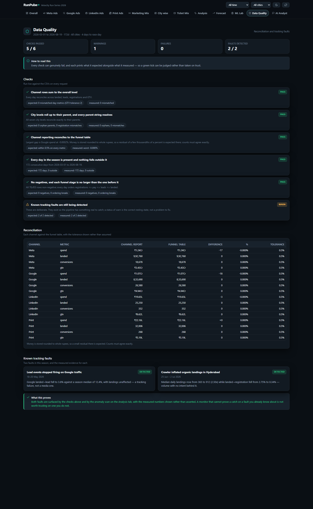
Natural-language questions answered from the season's aggregate figures.
Its point: the model is given totals, rates and top-ten lists — never raw rows — and is instructed to answer only from those and to say plainly when the answer is not there. It cannot invent a number it was not given, and it cannot answer about one individual session.
Six models, fitted by ml/train.py. Every number below is measured on data the model never saw during training.
Two logistic regressions over 13 features: seven numeric (days to race day, session depth, time on page, prior visits, ticket price, returning visitor, weekend) and six categorical (channel, city, device, creative type, price tier, campaign objective).
| Target | ROC AUC | Avg precision | Brier | Gradient boosting |
|---|---|---|---|---|
| Registered (3.0% base rate) | 0.6464 | 0.0583 | 0.0332 | 0.6343 |
| Submitted a lead | 0.6173 | 0.2002 | — | 0.5981 |
Training uses the first 80% of the season and testing the last 20%. A random split would place sessions from the same day on both sides; since demand on a given day drives conversion on that day, the model would effectively be told the answer, and the reported accuracy would be inflated.
Balancing a 3% positive rate is the textbook reflex and it was wrong here. It shifts the intercept so far that the model's average predicted probability becomes 48% against an actual rate of 3.5% — the ranking stays fine, but every percentage the interface displays becomes meaningless, and the Brier score degrades from 0.033 to 0.244. Removing it costs 0.0016 of AUC and produces calibrated output. The calibration curve in ML Lab now tracks the diagonal: the lowest decile predicts 0.83% against an observed 1.11%, the highest predicts 6.54% against 6.75%.
Ridge regression on log1p of each series, with a linear trend, a race-day proximity ramp, Fourier terms at a weekly period, day-of-week indicators, and the values from one day and seven days earlier. Multi-step predictions are recursive, so the model builds on its own output rather than on actual values it will not have.
| Series | Model error | Naive baseline | Verdict |
|---|---|---|---|
| Registrations | 16.1% | 20.0% | beats the baseline |
| Revenue | 16.9% | 20.8% | beats the baseline |
| Spend | 15.4% | 19.0% | beats the baseline |
| Traffic | 10.4% | 10.2% | a tie, reported as one |
Error is mean absolute percentage error over five rolling-origin folds with a seven-day horizon, refitting at each origin. The seven-day lag term is included on purpose: the naive baseline is a seven-day lag, so a model that leaves it out can only beat that baseline by luck.
A curve of the form registrations = a × spend^b fitted per channel, holding trend, race-day proximity and day of week constant.
| Channel | Elasticity | Fit quality | Average CPA | Marginal CPA |
|---|---|---|---|---|
| Meta | 0.933 | 0.889 | ₹471 | ₹505 |
| 0.820 | 0.797 | ₹316 | ₹385 | |
| 0.950 | 0.388 | ₹4,607 | ₹4,850 | |
| 0.950 | 0.645 | ₹6,802 | ₹7,160 |
Marginal, not average. Average cost per acquisition describes money already spent. The cost of the next registration is the only figure a budget decision can use, and on a curve with diminishing returns the two are different.
The optimiser holds total daily spend fixed and moves it ₹1,000 at a time toward whichever channel currently has the lowest marginal cost per registration. Each channel is floored at 20% and capped at 250% of its current spend, because bidding and creative both need time to re-learn and a channel taken to zero loses its accumulated audience data. A curve fitting worse than 0.25 is not permitted to receive additional budget at all.
Result: +38.1% more registrations per day at the same total spend — Print down 79%, Meta down 79%, LinkedIn down 80%, Google up 89%.
A robust outlier score using the median absolute deviation, computed on each day's ratio to a 31-day centred rolling median.
Six checks run on every request. Each reports what it expected alongside what it actually measured.
| Check | What it proves | Result |
|---|---|---|
| Channel totals sum to the overall total, every day, on four metrics | No traffic or revenue is double counted or lost between levels | pass · 0 mismatches |
| All seven city levels roll up to their parent, and every parent key resolves | No drill-down is silently empty | pass · 0 orphans |
| Each channel's own reporting reconciles to the funnel table | Two independent paths to the same number agree | pass · worst 0.00016% |
| Every day of the season present, nothing outside it | No missing days quietly depressing a total | pass · 172 days |
| No negatives; registrations ≤ payments ≤ leads ≤ visits, daily | The funnel cannot widen as it descends | pass |
| Two known tracking faults still detected | The monitoring still works | 2 of 2 found |
| Fault | Window | Measured evidence |
|---|---|---|
| Lead tracking stopped firing on Google traffic | 18–20 May | Visit-to-lead rate fell to 3.8% against a season median of 12.4%, while visits held steady. Traffic arriving normally but no leads recorded is a tracking failure, not a media problem — and the distinction decides whether anyone should touch the campaign. |
| An automated crawler inflated organic traffic in Hyderabad | 25 Jun – 2 Jul | Median daily visits rose from 365 to 912 (2.50×) while the visit-to-registration rate collapsed from 2.75% to 0.34%. Volume with no intent behind it, which understates every conversion rate for that city while it is included. |
Four problems that shaped the implementation, and what was done about each.
The funnel table is 76,453 rows that repeat the same 172 dates, 22 level names and 667 entity names over and over. Serialised as a list of objects, that is 17.33 MB — and a serverless function may return at most 4.5 MB, so the deployed application would have failed on its very first request.
Solution. Each repeated text value is stored once in a dictionary and referenced by position, and each row is sent as a plain list of numbers rather than a labelled object. The browser rebuilds the original rows on arrival. No information is lost.
| Endpoint | Before | After | Reduction |
|---|---|---|---|
/api/data | 17.33 MB | 2.61 MB | 85% |
/api/meta | 8.48 MB | 1.14 MB | 87% |
/api/google | 2.17 MB | 0.37 MB | 83% |
/api/linkedin | 0.86 MB | 0.12 MB | 86% |
Covered in section 7.4. Fitting spend against registrations without demand controls returned an elasticity above 1 for Google, implying increasing returns to advertising. Adding trend, race-day proximity and day-of-week controls brought every channel into the plausible 0.82–0.95 range.
Covered in section 7.6. The first version scored raw daily values and flagged race week — the campaign working as intended — while missing a real three-day tracking failure. Detrending against a rolling median, and widening the window to 31 days, fixed both.
The first specification had no race-day ramp and no lag terms, and scored 35.8% error against a naive baseline's 17.5%. Registrations for a dated event do not grow in a straight line; they surge in the final fortnight. Adding an explicit proximity ramp and the seven-day lag brought the model ahead of the baseline on three of four series.
| Path | Responsibility |
|---|---|
app/page.tsx | Owns all application state — date range, city filter, active view — and builds the single context object every view receives. |
app/layout.tsx | Document shell, metadata, theme provider. |
app/globals.css | The entire design system, written against CSS variables so three themes work from one file. |
app/api/*/route.ts | Eight server endpoints. None throws: a failure returns a readable message so the interface degrades instead of blanking. |
lib/types.ts | Every shared shape. The contract both the server and the views compile against. |
lib/csv.ts | Server-only loaders. Each file is parsed once and cached for the process lifetime. |
lib/data.ts | All derivation: totals, ratios, slicing by level and city, movers, rolling means, robust outlier scores. |
lib/pack.ts | The compact wire format from section 9.1. Encoder and decoder live together so they cannot drift apart. |
lib/ml.ts | Scores the exported model coefficients in the browser. Also the response-curve maths. |
lib/quality.ts | The six data-quality checks. |
lib/tabkit.ts | Helpers shared across views so thirteen files do not each reimplement the same aggregation. |
lib/theme.tsx | Theme state, persisted, written to the document root as CSS variables. |
lib/format.ts | Indian-numbering formatters. Every displayed number passes through one of these. |
components/ | Ten shared components — table, chart, funnel, metric cards, and so on. |
components/tabs/ | One file per view, thirteen in total. |
scripts/generate.mjs | The simulation. Produces every CSV. |
scripts/config.mjs | The world definition: cities, channels, campaigns, publications, tickets. |
ml/train.py | Fits all six models and exports them as one JSON file. |
ml/models/bundle.json | The exported models the application reads. |
The repository is connected to Vercel. A push to main triggers a build; the API routes become serverless functions and the interface is served from the edge. Environment values, including the Gemini key, are stored encrypted in the hosting project and are never committed to the repository.
What this project does not establish, stated plainly.
They are fitted on spending that was chosen by a marketing team, not assigned by an experiment. Demand controls remove the most obvious confounder but cannot remove all of them. The optimiser's +38% is what the fitted relationship implies if it holds, not a promised outcome. Establishing causality would require deliberately randomised spend — a geographic holdout test or a budget split experiment.
A registration is credited to the last channel the visitor came through. Print's near-zero measured return is a direct consequence of that rule, not a measurement of what print achieved: a reader who saw a newspaper advertisement and later searched the event by name is recorded as Google. Any channel bought for awareness is systematically undercounted by this method.
An AUC of 0.6464 on a 3% base rate is genuine signal, and the calibration is good. It is not a strong classifier. It is suitable for ordering audiences by likelihood — the top decile converts about twice the base rate — and unsuitable for a confident judgement about any one individual visitor.
The band is derived from how wrong this model has been historically on this series. It does not account for anything that has not happened before — a competing event, a weather cancellation, a payment gateway failing during the final week.
It is realistic because the generative process is explicit and the resulting funnel rates, click costs and channel economics fall in plausible ranges. But nothing here validates the simulation against a real advertising account. The engineering, the modelling method and the quality checks are what the project demonstrates.
RunPulse Analytics · runpulse-bhargavi-aitwade-mit-wpu-capstone.vercel.app · github.com/shashanx52/runpulse-analytics